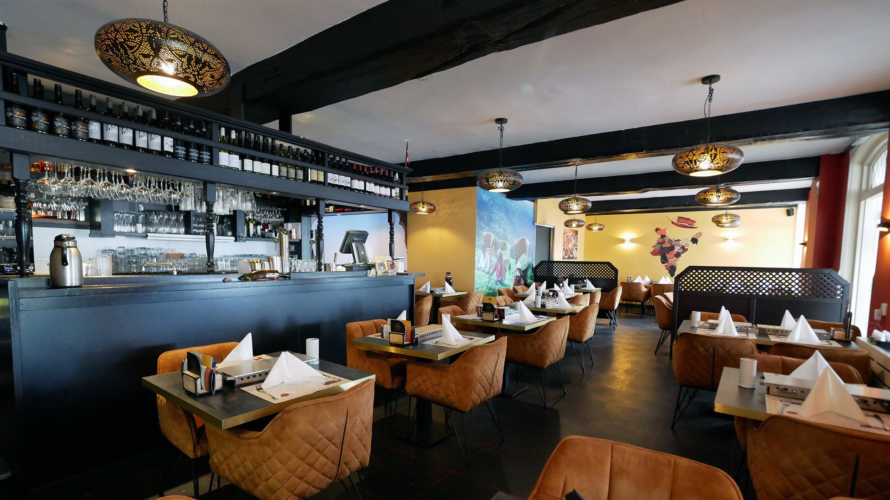
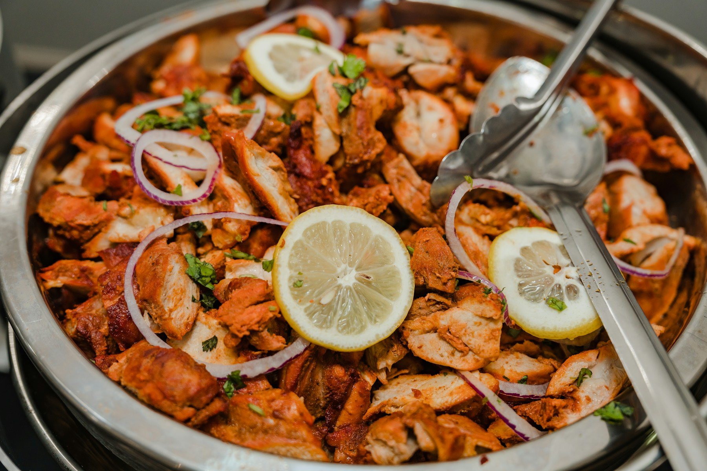

Vegetarian menu
2 pers. € 65,503 pers. € 98,50
- Samosa / Onion Bhajee
- Palak Paneer
- Vegetable Balti
- Mushroom Bhaji
- Rijst / Nan brood / Gemengde salade
- Dame Blanche of koffie of thee

Indiaas restaurant aan de boulevard van Harderwijk
Indiase kookkunst, echt iets anders.
Dinsdag gesloten, de rest van de week open
Al bijna 15 jaar een begrip in Harderwijk. Eerst in de Bruggestraat en sinds een aantal jaar op deze prachtige locatie aan de boulevard van Harderwijk.
Wij beschikken over een ruim terras, zowel aanpandig als aan het water. Met een beetje geluk kunt u 's avonds genieten van een prachtige zonsondergang.
Onder het motto "Indiase kookkunst, echt iets anders" bieden wij u een ruime keuze gerechten uit de Indiase keuken aan. Een goede prijs/kwaliteit verhouding, een gezellige atmosfeer en een uitgebreide menukaart zijn de ingrediënten van ons concept.
Laat ons je verrassen!

Niets in de wereld komt overeen met de smaak van het eten dat in een tandoori oven is bereid! De tandoor is gemaakt van klei en heeft een kegelvorm als een bijenkorf. Hij wordt gestookt met houtskool en bereikt zeer hoge temperaturen, waardoor het vlees aan de spies heel snel gaar is.
De tandoori is een echte oven, dus ook ons nan brood wordt erin gebakken: tegen de binnenwand geplakt en in een mum van tijd klaar.
Naar de tandoori gerechtenWij bereiden uw maaltijd vers. U kunt aangeven hoe pittig u uw gerecht wenst: mild, medium of heet. Bent u veganistisch? Vraag de ober naar de mogelijkheden.

Naast gezellig eten in ons restaurant of op ons terras kunnen wij u ook van dienst zijn op het werk of thuis. Denk aan een feest thuis of catering op het werk.
Afhankelijk van uw wensen verzorgen wij van een snackbuffet tot een uitgebreid menu op locatie. Wij regelen alles, van borden en bestek tot de afwas, en ontzorgen u daarmee van A tot Z.
Liever zelf ophalen? Bekijk onze afhaalkaart.
Vraag naar de mogelijkhedenWij zijn 6 dagen per week geopend.
| Maandag | 16:30 – 22:00 |
|---|---|
| Dinsdag | Gesloten |
| Woensdag | 16:30 – 22:00 |
| Donderdag | 16:30 – 22:00 |
| Vrijdag | 12:00 – 22:00 |
| Zaterdag | 12:00 – 22:00 |
| Zondag | 12:00 – 22:00 |
Voor reserveringen kunt u ons mailen of bellen: info@mamta.nl of 0341 266 377. Ook via TheFork.